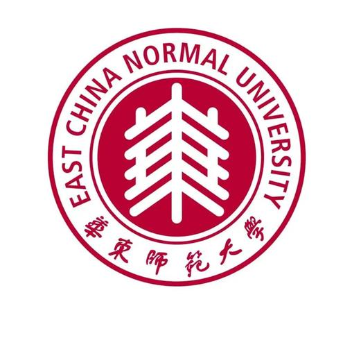
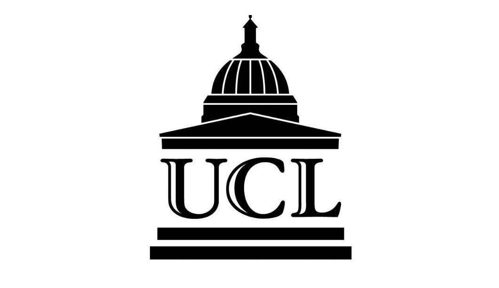
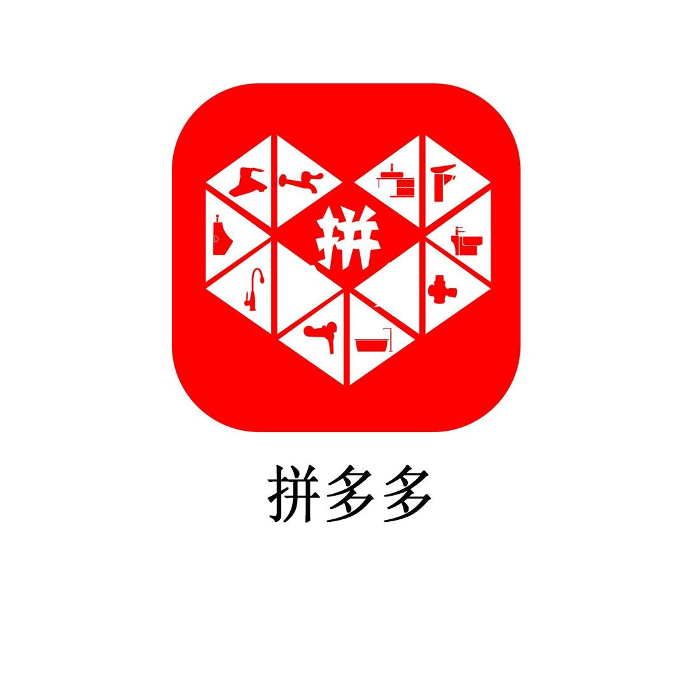
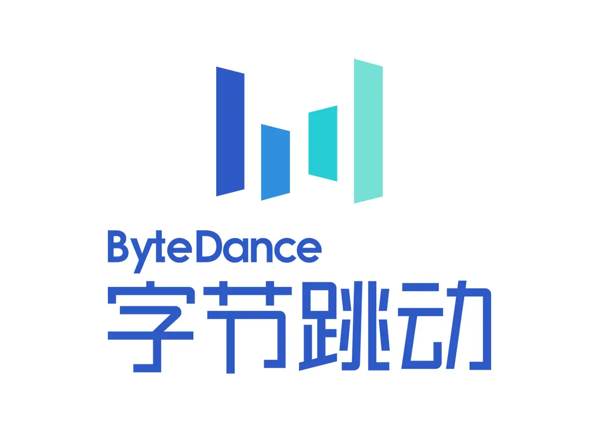

Hi, 我是薛月朗
Marketing Specialist
拥有2年跨境电商市场营销及项目管理经验，热衷于解决业务痛点、搭建标准化业务系统。致力于挖掘基于数据的创新性增长解决方案。
教育背景
华东师范大学
汉语言文学专业
2018.09 - 2022.06
本科
University College London
Education
2022.09 - 2023.12
硕士
英语水平：雅思7.0分，商务沟通熟练
工作经历

拼多多
海外广告投放 · 全职
2025.06 - 2026.04
- 投放统筹：负责Temu法国站Meta/Google全链路投放，统筹账户素材优化
- 数据优化：搭建投放监控体系，A/B测试提升转化，操盘海外大促增收
- 渠道深耕：研究竞品打法打造本土化优势，对接海外媒体挖掘业务增量
拼多多
海外KOL运营 · 全职
2024.02 - 2025.06
- 达人布局：制定多国达人合作策略，搭建分层达人矩阵实现规模化投放
- 内容操盘：输出差异化内容方案，落地摩洛哥开站项目打造爆款拉新
- 策略迭代：搭建数据复盘体系，优化投放结构提升整体营销营收效益

字节跳动
飞书商业化实习
2023.09 - 2024.02
- 活动策划：主导线下营销活动全流程落地，触达千余家企业挖掘线索
- 商机挖掘：联动业务团队深耕重点行业，筛选定级高价值客户
- 数据复盘：搭建数据监测体系，拆解核心指标输出优化方案
技能特长
海外效果广告全链路投放
全球化KOL达人矩阵运营
跨境电商增长策略操盘
营销数据复盘与指标迭代
AI落地应用
跨部门项目统筹与资源协调
学习与探索
持续深耕跨境增长、全域营销打法，跟进AI营销、自动化投放前沿模式，落地AI匹配工具等个人项目，将新技术转化为业务增长实操能力。